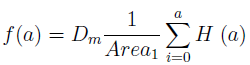
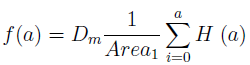
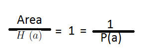
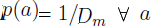
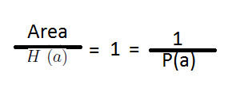
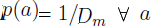

Histogram Equalization
The basic idea is to make less gray pixels even less grayer. Here the assumption is that we've already constructed the histogram of the picture with the dark pixels and the histogram is represented as a function "H" which is a function of "a"(where "a" is any pixel-value, and H(a) would return the number of times that pixel-value has appeared at an arbitrary (row,column) coordinates in the darker picture).
Lets assign the total number of pixels in a darker picture to a variable called "Area"(Area = columns*rows). Lets further suppose that pixel-value is our random variable. The probability function of this random variable is...  and, the probability distribution function is...
and, the probability distribution function is...  . Our histogram equalization function then would be... . The
. Our histogram equalization function then would be... . The  is the gray-level for the new image. Each pixel of our new picture will have this pixel-value as such that  and hence the probability function of the pixel values in new image will be... .
is the gray-level for the new image. Each pixel of our new picture will have this pixel-value as such that  and hence the probability function of the pixel values in new image will be... .
The function f(a) simply takes the probability function and probability distribution function and returns their product.